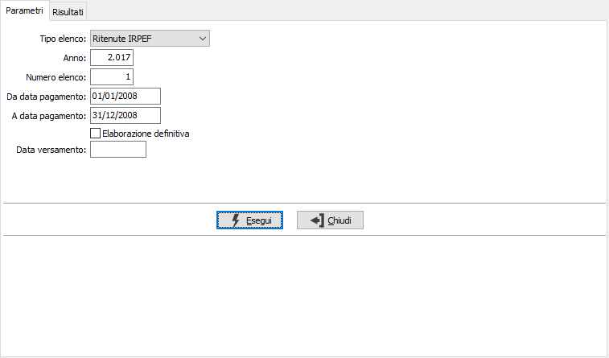
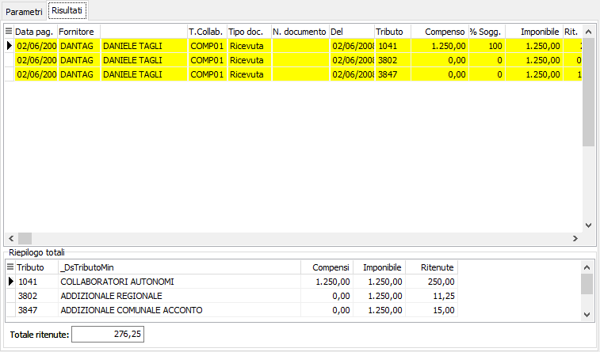

Stampa elenco
Il programma di stampa e generazione elenchi ritenute risponde all’esigenza dell’utente di preparare i dati per la stesura della Delega Unificata F24.

Per prima cosa deve essere definita la tipologia di ritenute che si intende trattare (IRPEF,INPS), dopodiché specificando i limiti di data pagamento vengono presentati tutti i pagamenti non ancora versati.
Specificando di eseguire l’elaborazione in modalità definitiva al momento in cui i dati vengono salvati attraverso l’apposita funzione F10 i pagamenti vengono attribuiti allo specifico elenco. È possibile inserire anche la data del versamento.

Attraverso la griglia di selezione è possibile agire ancora sui pagamenti effettuati (normalmente tutti i pagamenti vengono considerati da versare).
I dati presentati a video vengono raggruppati per codice tributo ministeriale nel caso di elenco IRPEF oppure per codice contributo INPS nel caso di elenco INPS per permettere la compilazione della delega F24.